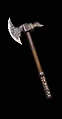
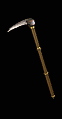
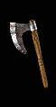
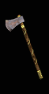

| 1 Handed Axe |
Min/Max 1h Damage |
Level Requirement |
Min Strength |
Min Dexterity |
Rangeadder |
Durability |
Sockets |
Speed by Class |
Quality Level |

Hatchet
|
10 to 21 (15.5 Avg) |
19 |
25 |
25 |
0 |
28 |
2 |
[0]
Ama, Asn, B, D, N, P - Fast
S - Normal |
31 |

Cleaver
|
10 to 33 (21.5 Avg) |
22 |
68 |
- |
1 |
24 |
4 |
[10]
Asn, P - Fast
Ama, B, D,N, S, - Normal |
34 |

Twin Axe
|
13 to 38 (25.5 Avg) |
25 |
85 |
- |
1 |
24 |
5 |
[10]
Asn, P - Fast
Ama, B, D, N, S, - Normal |
39 |

Crowbill
|
14 to 34 (24 Avg) |
25 |
94 |
70 |
1 |
26 |
6 |
[-10]
Asn, P - Very Fast
Ama, B, D, N, S, - Fast |
43 |

Naga
|
16 to 45 (30.5 Avg) |
25 |
121 |
- |
2 |
26 |
6 |
[0]
Ama, Asn, B, D, N, P - Fast
S - Normal |
48 |
| 2 Handed Axe |
Min/Max 2h Damage
| Level Requirement
| Min Strength |
Min Dexterity |
Rangeadder
| Durability
| Sockets
| Speed By Class
| Quality Level |

Military Axe
|
14 to 34 (24 Avg) |
22 |
73 |
- |
1 |
30 |
4 |
[-10]
D - Very Fast
N, P, S - Fast
Ama, Asn, B, - Normal |
34 |

Bearded Axe
|
21 to 49 (35 Avg) |
25 |
92 |
- |
1 |
35 |
5 |
[0]
D, P, S - Fast
Ama, Asn, B, N - Normal |
38 |

Tabar
|
24 to 77 (50.5 Avg) |
25 |
101 |
- |
1 |
40 |
5 |
[10]
D - Fast
N, S - Normal
Ama, Asn, B, P - Slow |
42 |

Gothic Axe
|
18 to 70 (44 Avg) |
25 |
115 |
79 |
2 |
50 |
6 |
[-10]
D - Very Fast
N, P, S - Fast
B, Ama, Asn - Normal |
46 |

Ancient Axe
|
43 to 85 (64 Avg) |
25 |
125 |
- |
3 |
50 |
6 |
[10]
D - Fast
N, S - Normal
Ama, Asn, B, P - Slow |
51 |